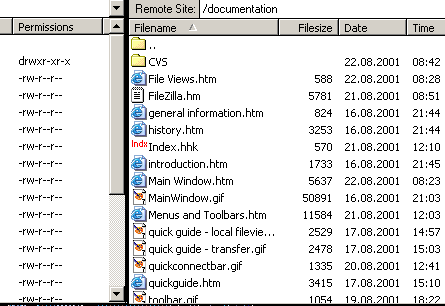
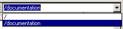
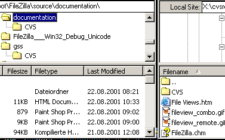

The File and Folder views
1. The remote site
The file and folder view of the remote site is located on
the right side of the main window. With it you can navigate on an FTP server and
initiate downloads.

The file and folder list
Each line represents a file or folder. The file
and folder icons help you to identify the files and folders quickly. The labels
above each column describe their meaning. The meaning of the first 4 columns
should be clear: Filename, Filesize, Date and Time. The last column entitled
"Permissions" tells you what access rights you have on the files. You don't
really have to care about the permissions. The first character indicates whether
the entry is a file, a directory or a link. The last characters are three groups
of three characters each. The first group describes the owner rights, the second
the group rights and the last one the public rights. An r means that you have
read access, w means write access and x means the right to execute a file. You
can sort the list by clicking on one of the column labels. A small gray arrow
indicates which column the list is sorted on and the sort direction. You can toggle the sort direction by clicking the heading again.
You can change the style of the list and the
visible columns with the menu of the
main window.
Navigating on the server
On the upper side you will notice the combo
box. Here the current folder is listed. You can also enter a new folder. Press
enter and FileZilla switches to this folder. You can also click on the arrow on
the right to open a popup menu containing a list of all directories you've
visited on that server. Click on an item to switch to that directory.

Below that is the file and folder list. The
first entry in the list is always "..". It represents the parent
folder of the current folder. You can switch to a folder by double clicking it
or by using the context menu.
Downloading files
There are three ways to download a file: You can
double click it, you can use the context menu or you can drag and drop the file
into the local file list. You can operate on a folder in the same way. You may
also select multiple files and folders for transfer in one operation, except of
course double-clicking is not available in this situation. To add items to the
queue for a later transfer, you may again use the context menu or you can drag
and drop them into the queue.
The context menu
Right-click the file and folder list to display
the context menu.
|
Download |
- |
Downloads the selected files and folders. The download
starts immediately. |
|
Add to Queue |
- |
Adds all selected items to the transfer queue. Use the
 button
on the toolbar to start the transfer. button
on the toolbar to start the transfer. |
|
Download as |
- |
Asks you for a username and password that will be
used to download the selected files and folders. |
|
Open |
- |
Opens the selected directory. |
|
View/Edit |
- |
When using this command, FileZilla downloads the
selected file into a temporary folder. Then it opens the file with the
file viewer/editor you've set in the settings dialog. When you've closed
the viewer/editor and the file has changed, FileZilla will ask you if you
want to upload the file back to the server. |
|
Create Directory |
- |
Creates a new directory in the current folder. You
have to enter a name for the new folder before it will be created. |
|
Delete |
- |
Removes all selected files and folders. You will be
asked for confirmation. |
|
Rename |
- |
Renames the selected file. You'll be asked for the new
name. |
|
File attributes |
- |
Allows you to change the attributes of the selected
file. This function is not supported by all FTP servers. |
2. The local site
The file and folder view of the local site is located on
the left side of the main window. With it you can navigate on your local machine
and
initiate uploads.

The file and folder list
The local file and folder list is very similar
to the remote file and folder list. The labels above each column describe their
meaning. Again you can sort the list and the small gray arrow indicates which
column the list is sorted on and the sort direction.
You can change the style of the list and the
visible columns with the menu of the
main window.
Navigating on the local site
On the upper side you will notice an edit
field. Here the current folder is listed. You can also enter a new folder. Press
enter and FileZilla switches to this folder.
Below that is a treeview. It displays the
folder structure of your machine. The current folder is always selected. Select
another item to switch to that folder. The treeview can be toggled using the  button on the toolbar.
button on the toolbar.
On the bottom there finally is the file and
folder list. The first entry in the list is always "..". It represents
the parent folder of the current folder. You can switch to a folder by double clicking it
or by using the context menu.
Uploading files
There are three ways to upload a file: You can
double click it, you can use the context menu or you can drag and drop the file
into the remote file list. You can operate on a folder in the same way. You may also
select multiple files and folders for transfer in one operation, except of course
double-clicking is not available in this situation. To add items
to the queue for a later transfer, you may again use the context menu or you can
drag and drop them into the queue.
The context menu
Right-click the file and folder list to display
the context menu.
|
Upload |
- |
Uploads the selected files and folders. The upload
starts immediately. |
|
Add to Queue |
- |
Adds all selected items to the transfer queue. Use the
button
on the toolbar to start the transfer. |
|
Upload as |
- |
Asks you for a username and password that will be
used to upload the selected files and folders. |
|
Open |
- |
If you've selected a directory, FileZilla switches to
that directory. If you've selected a file, it will be opened with its
associated application. |
|
View/Edit |
- |
Opens the selected file with the file viewer/editor
specified in the settings dialog. |
|
Create Directory |
- |
Creates a new directory in the current folder. You
have to enter a name for the new folder before it will be created. |
|
Delete |
- |
Removes all selected files and folders. You will be
asked for confirmation. |
|
Rename |
- |
Renames the selected file. You'll be asked for the new
name. |
3. Shortcuts
-
F5 - refreshes both file lists
-
CTRL + A - Select all files in the current file
list.
-
DEL - Delete all selected files and folders.
Deleted files will be moved to the recycle bin
-
SHIFT + DEL - Delete all selected files and folders.
Deleted files will be erased and not moved to the recycle bin.